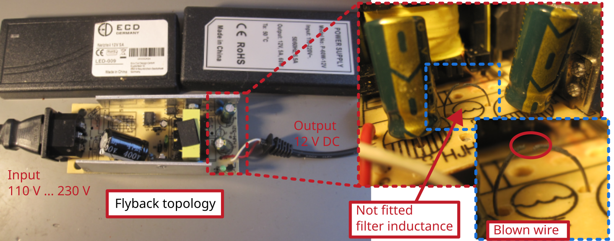

Switch mode power supply 12V 5A

Model No. P-60W-12V
Description of failure
Power supply unit does not work. No output voltage.
Failure investigation
First measure the voltages logically from the input side to the output side. With the two electrolytic capacitors at the output, it is noticeable that a voltage of 12 V can be measured at one, but no voltage at the other. It is noticeable that an originally planned filter choke between the two capacitors has not been fitted and has been bridged by a piece of wire. A closer look reveals that the wire in the middle is burnt through.
After replacing the wire, the power supply unit works perfectly again.
Technical background
In electronics development, power supply units are developed under very high cost pressure. On the one hand, the development time must be kept short, and on the other, care must be taken to ensure that the power supply unit is inexpensive to produce but still meets all specifications.
In order to get the power supply to run as specified (low ripple voltage at the output) at the first attempt (a second attempt costs significantly more development time), a choke was included as a filter element at the output to ensure that the specification was achieved. When the power supply unit was subsequently tested, it turned out that the specification was achieved even without the output choke. To save costs, the choke was replaced by a piece of wire. Unless absolutely necessary, a new layout has been left out to save time.